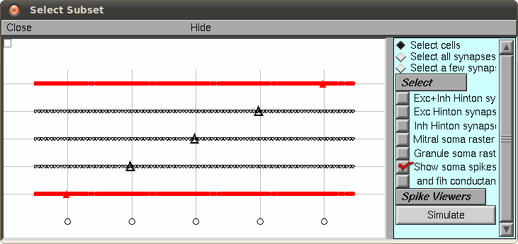

README file for the model associated with the paper McTavish TS, Migliore M, Shepherd GM, Hines ML (2012) Mitral cell spike synchrony modulated by dendrodendritic synapse location. Frontiers in Computational Neuroscience. 6, January 2012, DOI:10.3389/fncom.2012.00003. These files were contributed by Thomas McTavish [thomas.mctavish at yale.edu] and build off the model by Migliore et al, 2010, running under the NEURON simulation environment. General description of the model: This model considers synchrony between mitral cells induced via shared granule cell interneurons while taking into account the spatial constraints of the system. In particular, since inhibitory inputs decay passively along the lateral dendrites, this model demonstrates that an optimal arrangement of the inhibitory synapses will be near the cell bodies of the relevant mitral cells. Usage: The complete model has 5 mitral cells and 100 granule cells. An output file of spike times is provided (spikeout.spk). The parameters that gave rise to this output file are specified in params.hoc. Figure 1 can be redrawn with this spike data and without running a simulation via the python command: $ python analysis.py which will write a Fig1.pdf file, assuming Python with numpy and matplotlib are installed. (Enthought Python Distribution will do it). You also need to have the neuronpy library installed, which can be obtained via the Python Package Index and the command: $ [sudo] pip install neuronpy Running Simulations: There are two ways to run simulations. One way is to run a full simulation with 5 mitral cells and 100 granule cells. This is computationally expensive. The other way takes the spikes from a full simulation and with the PatternStim, plays back particular cells of interest using the relevant spikes that input onto the cells of interest. Preliminaries: First compile the mod files in the src folder with mknrndll (MAC and mswin) or nrnivmodl (linux/unix). Playback mode: Launch mosinit.hoc from the src folder. This uses the default parameters of params.hoc and the associated spikeout.spk file as input. The 5 mitral cells and 100 granule cells are shown in the main window. Most figures in the paper consider the left-most and right-most mitral cells of the network and the granule cells near to each of their somas. (Even though there are other active cells in the network, they are not coupled. That is, mitral cells 1 and 5 share granule cells that are unique from mitral cells 2 and 4, which share a different set of granule cells. The middle mitral cell is a control to observe its activity without granule cell connectivity. The reason for this grid architecture of 5 mitral cells to 100 granule cells was simply to utilize the network design from our previous models (Migliore, et al., 2010)). Select a mitral cell (triangle cell body) and select the "Simulate" button (here is an example with the first and fifth cells selected:)  Then you can select "Init and Run" to perform the simulation, which will animate the spikes in the network and show the membrane response of the selected mitral cell soma. Full simulation: A full simulation can be launched by running: $ nrniv parinit.hoc or better, mpiexec -nnrniv parinit.hoc if you have MPI. This will replace the existing spike output files, so be careful. Every 100ms of simulation time will be printed to the screen. On a 2010 MacBook Pro, this runs at about 2 minutes per 100ms of simulation. The spikeout.dat file created can be converted to the spikeout file via the bash command $ sort -k 1n,1n -k 2n,2n spikeout.dat > spikeout.spk which properly sorts the spike times. Model and simulation parameters can be modified via params.hoc.